En 1975 este liceo comenzo a funcionar en una casa habitacion ubicada en la rambla entre Michigan y Estrázulas.
En 1984 paso a funcionar en el lugar actual construido en Predio Municipal cedido al Consejo
de Educación Secundaria por Decreto Junta Departamental junto al liceo N° 10 Dr. Carlos Vaz Ferreira.
2 meses tras el susceso el Liceo N°10 se va a Mataojo esq. Av. Italia.
Contactar: mauroabal2011@.gmail.com o lessidiego10@.gmail.com
 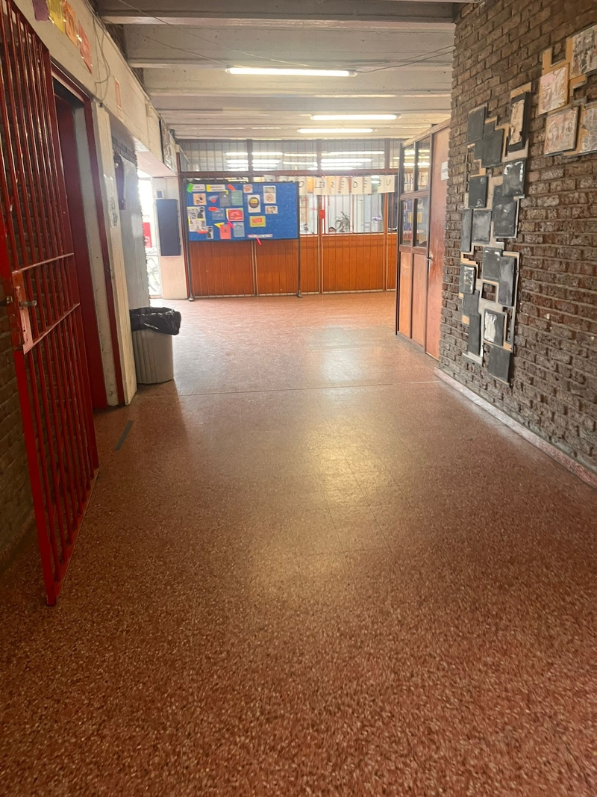
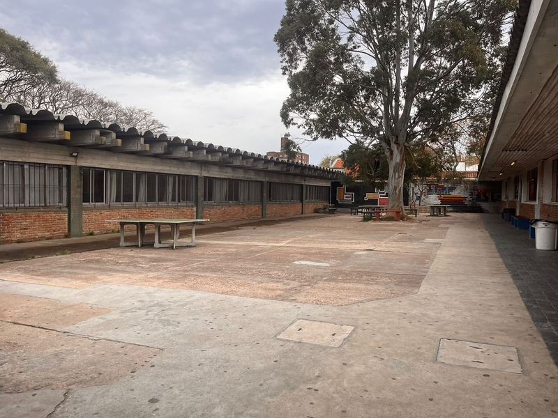
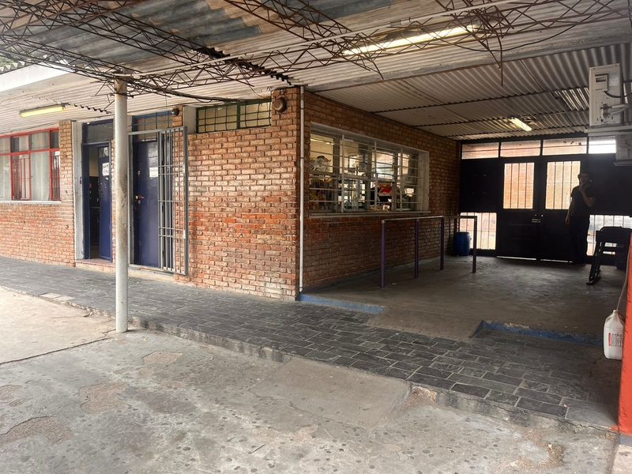
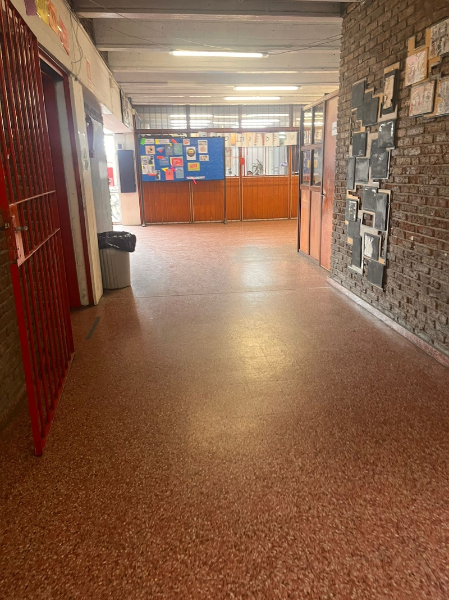
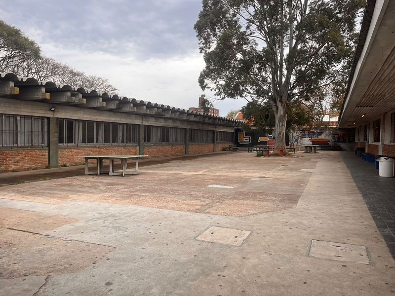
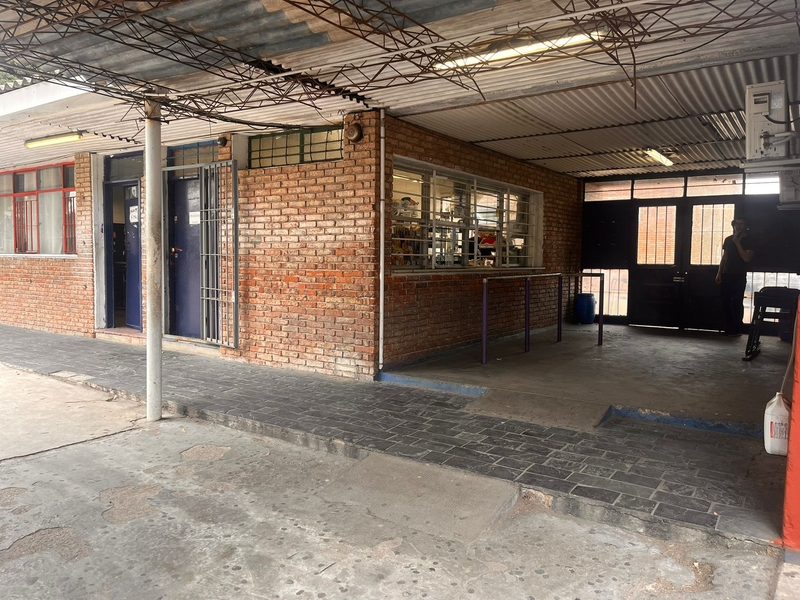
 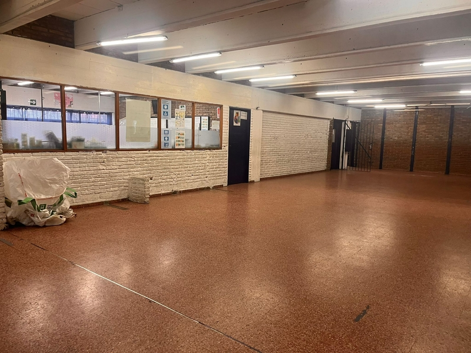
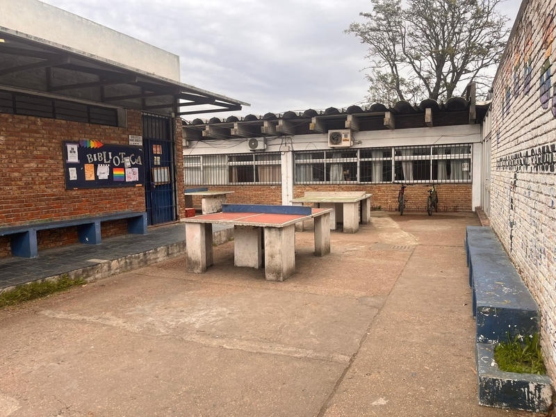
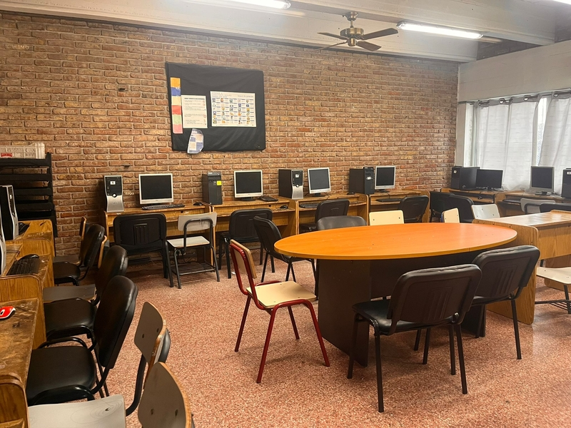
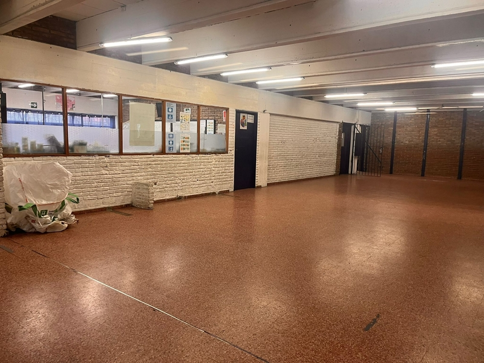
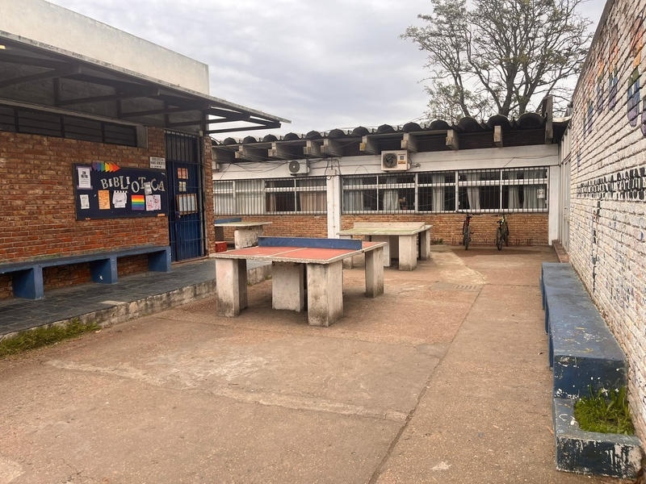
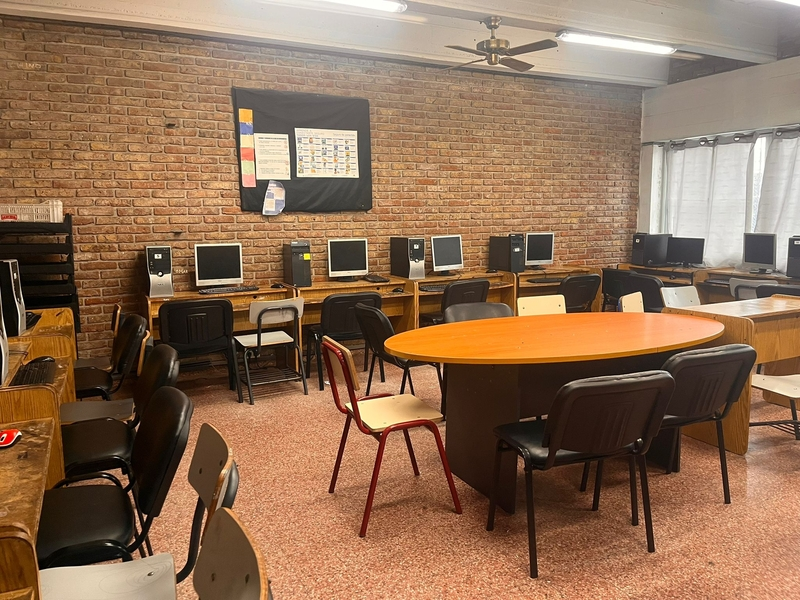